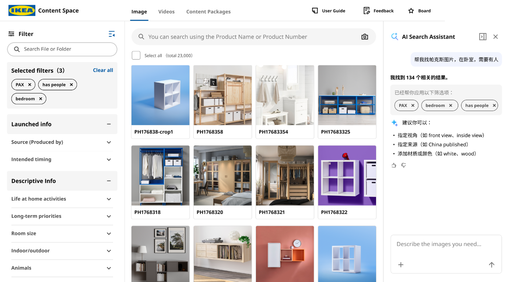
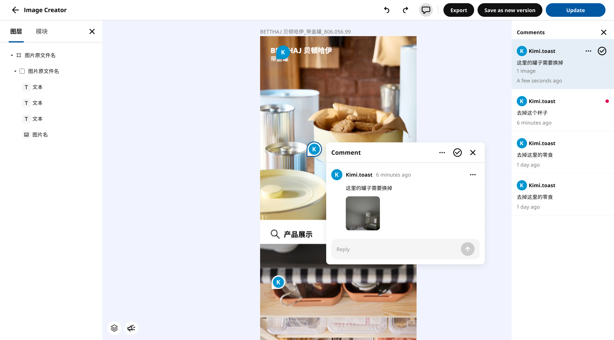
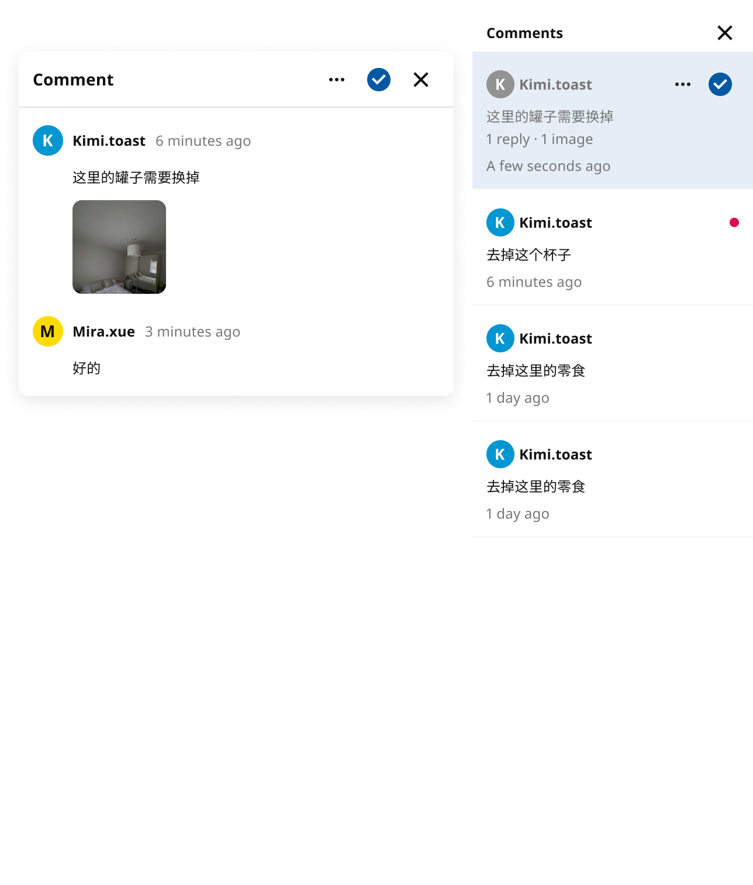
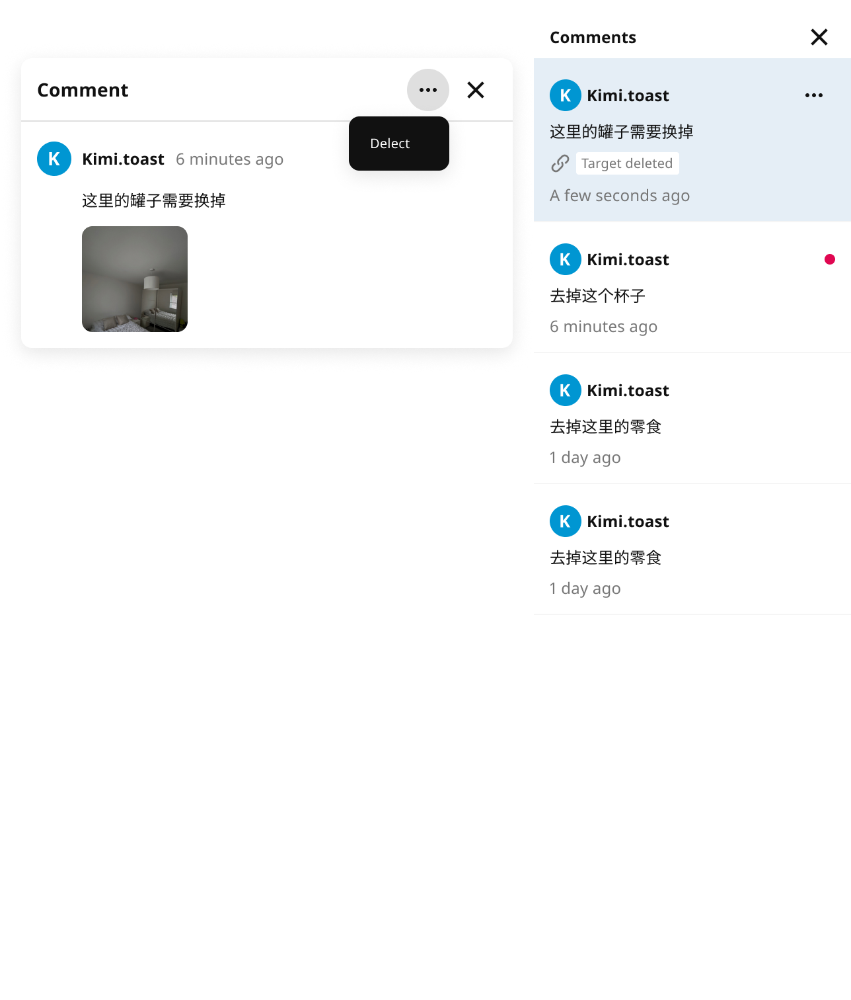

CASE A
AI-ASSISTED SEARCHAI 搜索体验 · 对话与筛选
用户会按自己的方式找素材，系统要把这句话翻译成可操作的条件。
一开始看起来像是要加一个 AI 搜索入口。继续拆开后发现，用户更需要的是把一句生活语言变成看得见、改得动的筛选条件。新方案不另起 Chat，而是让 AI 回到既有的搜索和 Filter 体系里。
- 自然语言先拆成搜索词和结构化筛选条件
- 用户可以删除、修改或补充 AI 建议，再决定 Apply
- 只有缺少继续任务所必需的信息时，才向用户 Clarify

点击画布气泡，定位对应线程；用户可以继续回复、编辑或处理。

画布气泡不再打扰编辑；评论、附件与回复仍保留在面板，也可以 Reopen。

